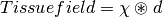
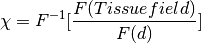

Exercise 3¶
Objectives¶
- Understanding
- Gaining experience to use QSM algorithms
The Last Step¶
We can see some beautiful contrasts between brain tissues from the local (or tissue) fields obtained from the last exercise. These local fields represent all the secondary magnetic field induced by the tissues (which are our magnetic susceptibility sources), and the effect of magnetic field is actually extended beyond the source itself.
Note
Think of a magnet that can attract metal toward it even when the two objects are not intact. It is because the magnetic field generated by the magnet extends outside the body itself, causing the polarisation of the metal.
We can describe the local fields generated by the magnetic susceptibility sources ( ) using the following equation:
) using the following equation:
(1)¶
where  is a unit (dipole) field that the source generated and has the following shape:
is a unit (dipole) field that the source generated and has the following shape:

Figure 1: An illustration of unit dipole field in (i) sagittal section and (ii) surface rendered contour. Red colour represents a positive magnetic field and blue colour represents a negative magnetic field. (Reproduced from Wang & Liu MRM 2014, Wiley)
Eq. (1) basically means that the secondary magnetic field experienced by the tissue at each location is the summation of the fields generated by all other (surrounding) sources. Since we have the prior knowledge about the shape of the magnetic field genearted by the source (which is , the unit dipole field) and the field generated by the tissues (result of our last exercise), mapping the magnetic susceptibility of the tissue is just the deconvolution of these two parameters (a.k.a. dipole inversion).
Note
Using the Fourier theorem, deconvolution can be performed by dividing the Fourier transform of the two known parameters:
(2)¶
where  and
and  are the Fourier and inverse Fourier transform operators.
are the Fourier and inverse Fourier transform operators.
Sounds simple, isn’t it? Let’s try it out!